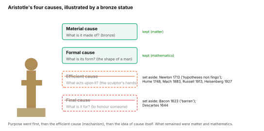

Library › The Unified Framework for the Graviton Pressure Theory
The Removal of Intent, Cause and Mechanism
How Modern Science Traded Explanation for Description and Left No Room for Mind, Meaning or Purpose
A Note on This Edition
The first edition of this paper was titled The Removal of Intent. It argued that modern science had exiled consciousness, meaning and purpose from its picture of the universe.
That argument still stands. But in the work that followed it, I learned that intent was not the deepest thing removed. Before purpose could be dismissed, the demand for mechanism had already been set aside. And before mechanism was set aside, the very idea of cause had begun to be questioned. This edition traces all three removals, in the order they happened, because the order matters: intent did not lose an argument. It lost the ground it stood on.
This paper is an essay, not a physics paper. In this second edition the physics papers of the framework make no claims about intent; that case is made here, in the philosophical register, where it belongs. Where this paper refers to Graviton Pressure Theory, each claim is labelled by its status: [Established] for what is accepted fact, [Argued] for what this framework argues in detail elsewhere, [Hypothesis] for what GPT proposes and has not yet tested, and [Open] for questions that remain unanswered.
A Universe Without a Voice
In the age of reason, science rose as the great liberator of thought—dismissing superstition, dissecting dogma, and offering humanity a map of the physical world that was elegant, predictive, and empirically grounded. It taught us to measure, to compare, to reduce complex phenomena to universal laws. In doing so, it gave us power—to build, to transform, to intervene.
But in its triumph, science made a trade.
It exchanged explanation for description.
It exchanged meaning for measurement.
It traded why for how much, and what acts for what follows.
What began as a method became a filter. And what began as a filter became a cage.
Three things were removed, one after another:
Intent—the question of purpose: what is this for?
Mechanism—the question of contact: what touches what, and what is exchanged?
Cause—the conviction that one thing makes another happen, rather than merely being followed by it.
None of these was removed by a discovery. No experiment ever showed that the universe has no purpose, that gravity has no mechanism, or that causes are unreal. Each removal began as a decision of method—often a sensible one—and hardened over generations into a decision of philosophy.1 What was first set aside to make progress was later declared not to exist.
This paper traces that narrowing—of language, of method, of imagination—until the only universe that could be spoken of was one that built itself, knew nothing, desired nothing, and ended in entropy.2
It takes discernment to know which truths must be remembered.
We begin where the narrowing began: with the four questions the ancients asked of everything.
The Four Causes and the Order in Which They Were Surrendered
The Ancients and the Embedded Mind
In many ancient cosmologies, the universe was not silent.
It spoke—in pattern, in symbol, in recurrence. It was not random. It was relational.
The stars were not just lights but messengers.
Time was not a coordinate but a rhythm.
Natural law was not law in the legal sense, but an echo of higher order.
In this worldview, knowledge was not extraction. It was communion. The knower did not stand apart from the known, but within it. To observe was to enter into relationship.
The cosmos had intention. Creation had purpose. Existence had direction.
This was not a denial of reason—it was reason animated by reverence.
Aristotle’s Four Questions
Aristotle gave this worldview its most precise form. To understand anything, he taught, we must answer four questions—the four causes:3
The material cause: what is it made of?
The formal cause: what is its form, pattern or structure?
The efficient cause: what acts upon it to bring it about?
The final cause: what is it for—what is its end, its purpose?
A full explanation answered all four. A bronze statue is made of bronze, has the shape of a man, is brought about by the sculptor’s hands, and exists to honour someone.
Modern science did not refute this scheme. It gave up its questions one at a time. The final cause went first. The efficient cause—the agent, the contact, the mechanism—was hollowed out next. What remained were matter and mathematics: the material and the formal.
The rest of this section follows that order.

First to Go: Purpose
The first surrender was purpose.
In 1623 Francis Bacon wrote that the inquiry into final causes is barren, “like a virgin consecrated to God,” producing nothing.4 Two decades later Descartes advised that we should seek only the efficient causes of natural things, since the purposes of God are beyond our knowing.5
It is important to be fair to them. Final causes had often been used to stop inquiry rather than advance it: if a thing exists because it is good that it should, there is nothing left to investigate. Setting purpose aside freed natural philosophers to ask how things work.
But notice what was said and what was not. Bacon and Descartes did not claim that purpose does not exist. They claimed it was not useful to science. A boundary of method was drawn. Only later would that boundary be read as a map of what is real.
With purpose set aside, the universe stopped speaking. It began to operate.
Second to Go: Mechanism
The mechanical philosophers who followed Descartes held a strict rule: bodies act on one another only by contact. If something moves, something must have touched it. This was the efficient cause made physical—and for a time it was the very definition of an intelligible explanation.
Then came Newton.
Newton’s law of universal gravitation predicted the motions of the heavens with unprecedented precision. But it described an attraction acting across empty space, with no contact and no named carrier. Newton knew exactly what this meant. In a letter to Richard Bentley in 1693, he wrote that the idea of one body acting on another at a distance, through a vacuum, without the mediation of anything else, was to him “so great an absurdity” that no one competent in philosophical matters could ever fall into it.6
And yet, in the second edition of the Principia in 1713, he declared that he had not been able to discover the cause of gravity from the phenomena, and that he would not invent one: hypotheses non fingo—“I frame no hypotheses.”7
This is the turning point. Newton’s honesty about what he did not know was admirable. But the success of his equations taught the generations after him a different lesson: that a law which predicts is enough, and that the question of what acts can be left unasked. Newton’s discomfort was not inherited. His mathematics was.
The search for mechanism did not die at once. Through the nineteenth century, Maxwell and many of his contemporaries still pictured fields as states of a physical medium, the luminiferous ether. But when the ether could not be detected, and when Special Relativity showed that the equations worked without one, the medium was dropped from physics altogether.
Even here, the story is not as simple as it is usually told. In 1920, Einstein himself told an audience at Leiden that in General Relativity space is endowed with physical qualities, and that in this sense “space without ether is unthinkable.”8 The medium had not been disproven. It had been renamed, stripped of mechanical properties, and quietly set aside.
Third to Go: Cause Itself
With purpose and mechanism gone, cause itself was next.
In 1748 David Hume argued that we never observe causation—only one event regularly following another. “Cause,” on this view, is a habit of expectation formed by repetition.9 In 1883 Ernst Mach, whose ideas shaped the young Einstein, went further: science, he argued, offers economical descriptions of how phenomena depend on one another, and has no need of causes at all.10
In 1913 Bertrand Russell published “On the Notion of Cause,” arguing that the word cause should be dropped from philosophy entirely, since advanced physics uses only equations relating quantities, and the law of causality survives only as “a relic of a bygone age.”11
Physics itself soon appeared to agree. In 1927, Heisenberg concluded his paper on the uncertainty relations with the claim that quantum mechanics had definitively established the failure of the law of causality.12 The interpretation that prevailed asked physicists not to ask what happens between measurements. Decades later, N. David Mermin summed up the prevailing attitude in a phrase that has become a slogan: “shut up and calculate.”13
Each of these thinkers had serious reasons. But the cumulative result was a science that could predict almost anything and was no longer permitted to say what was doing it.
What Remained: Matter and Mathematics
After these three surrenders, two of Aristotle’s four questions were left: what is it made of? and what is its form? Matter and mathematics. The material and the formal.
General Relativity is the purest example of an explanation built from form alone.14
Gravity is no longer a force, but the geometry of spacetime.
Mass does not pull; it curves.
Objects do not act; they follow geodesics.
John Wheeler’s famous summary captures it exactly: spacetime tells matter how to move; matter tells spacetime how to curve.15 This is a description of a relationship. It does not say what touches what, or what is exchanged.
Elegant? Yes. Predictive? Remarkably so.
But the geometry is mute.
There is no agent in the curvature.
No contact in the warp.
No efficient cause—only form.
Einstein himself never accepted that this was the end of the story. He objected to quantum mechanics not because it was strange, but because he believed a theory that predicts outcomes without describing the reality that produces them is incomplete. He wrote to Max Born that he was convinced God “does not throw dice,”16 and with Podolsky and Rosen he argued formally that the quantum description could not be considered complete.17 He sought a rational, causal order to the whole.
But the field moved on without him. His objections were answered socially more than logically, and then largely set aside. What remained was a physics that required no cause beneath its equations. And once there was no cause, there was nothing for intention to act through.
Biology Follows: Darwin and the Random Walk
Biology made the same surrender, with its own great theory.
Darwin’s theory of natural selection offered a breathtakingly elegant explanation of biological diversity.18 In doing so, it replaced the final cause in living things with a process:
Design was replaced by descent with modification.
Intelligence was replaced by adaptation.
Purpose was reinterpreted as reproductive success.
The appearance of direction was explained as the outcome of variation and differential survival.
Yet this is not the whole of Darwin. In The Descent of Man, he described a second force, sexual selection, in which animals choose their mates—and he openly attributed to them preference, and even a “taste for the beautiful.”19 Here, living creatures were not only pushed by circumstance. They were choosing.
This part of Darwin was resisted from the start. Alfred Russel Wallace, co-discoverer of natural selection, rejected mate choice as a real force, and for roughly a century it was largely neglected.20 It has since been revived and is now studied widely, though usually explained in adaptive terms; some biologists argue that aesthetic choice is a genuine evolutionary agent in its own right.21 The question of whether choice in living things is real agency or only its appearance has not been settled. It was simply set aside for a long time—and setting it aside was later mistaken for an answer.
Description in Place of Mechanism
The three surrenders left a habit of mind that is easy to miss, because it hides inside a word: explanation.
To describe a phenomenon is to state, often with great precision, how it behaves—what follows what, by how much, under which conditions.
To explain it mechanically is to name what acts: what touches what, and what is exchanged.
Both are valuable. A description that predicts is a great achievement, and nothing in this paper diminishes it. The error is not description. The error is presenting description as if it were mechanism—and then treating the mechanical question as answered, or as naive.
A simple test separates the two. Of any account, ask: does it name the physical interface—what touches what, and what is exchanged—or does it only describe the action? An account that passes names a carrier and a transfer. An account that fails may still be accurate. It simply has not yet explained.
Applied to gravity, the test is revealing.
“Mass curves spacetime” describes a relationship. It does not say what, physically, does the curving, or how a curve imparts motion to a body at rest.
“Objects follow geodesics” describes paths. It does not say what acts on an object to keep it on one.
The equivalence principle states that, locally, gravity and acceleration cannot be told apart. That is an observation about measurement. It does not, by itself, tell us what gravity physically is.
These points are argued in detail elsewhere in this framework—in the Gravity Constraint Set, the GR Silence Map and the paper on the Logical Closure of the Equivalence Principle.22 [Argued] The claim is not that General Relativity is wrong. It is that GR describes, and that it is a mistake to treat its description as the complete mechanism of gravity.
The same pattern appears where description and observation part ways. When galaxies rotate faster than their visible matter allows, and when the expansion of the universe accelerates, the descriptions are preserved by adding quantities—dark matter and dark energy—that are inferred from the mismatch itself. After decades of searching, there is still no confirmed direct detection of a dark matter particle. [Established] These names mark where the description needs help. They do not yet name what acts.
When mechanism is no longer required, its absence stops being visible. And when the absence is invisible, questioning it sounds naive.
When Mechanism Goes, Intent Has Nowhere to Stand
Intent is a kind of cause. A purpose, if it is real, must act through something—a channel, a medium, an interface. A universe described entirely by form, with no efficient causes, leaves no place for purpose to act. Intent was not refuted. It was left homeless.
The same is true of the one place where we know intent directly: the conscious mind.
Science Without the Observer
The ideal of scientific objectivity asks that results not depend on who observes them. As a discipline of method, this is one of science’s great strengths: a measurement anyone can repeat is a measurement anyone can trust.23
But the ideal slowly became something more: a picture of reality as it would be seen from no point of view at all—what Thomas Nagel called “the view from nowhere.”24 In that picture, the observer is not just controlled for. The observer is absent.
What began as a method for consistency became a philosophical posture: reality could only be described by removing the participant entirely. In the name of purity, experience was disqualified. And in doing so, physics set aside the one thing it has never explained: awareness.
The Observer in Quantum Theory
Nowhere is this tension sharper than in quantum mechanics.
Before measurement, a quantum system is described by a wavefunction spread over many possibilities.
On measurement, a single definite outcome is found.
What brings about the single outcome? This is the measurement problem, and after a century it remains unsolved. [Established]
It is important to state the mainstream position accurately. In standard physics, an “observation” is any physical interaction that records a result—a detector, a photographic plate, a stray air molecule—not a conscious mind. The theory of decoherence explains why interference between the possibilities disappears in such interactions. But by most accounts, including those of its own developers, decoherence does not explain why one particular outcome occurs.25
Some physicists of the first rank did propose that consciousness completes the measurement—among them Fritz London and Edmond Bauer, and later Eugene Wigner.26 Theirs remains a minority interpretation, and this paper does not claim it as fact.
The point here is narrower, and harder to dismiss. The question of what happens at measurement was not answered. It was declared off-limits—and the interpretations offered in its place, from many worlds to pure instrumentalism, are choices of philosophy, not results of experiment. The door to mind was not closed by evidence. It was closed by preference.
Mind as Byproduct: The Epiphenomenon Trap
Materialist accounts of the mind inherit the same framework. In 1874 Thomas Huxley compared consciousness to the whistle of a steam engine—produced by the machinery, but with no power to affect its working.27
But this view raises questions it cannot answer:
Why does matter generate experience at all?
How does the chemistry of neurons produce the taste of strawberries, the ache of longing, the concept of justice?
No equation has yet bridged the gap between the material and the felt. David Chalmers named this the hard problem of consciousness.28 The dominant responses have been to reframe it, to defer it, or—in the view called illusionism—to argue that experience is not what it seems to be.29
Each of these responses deserves a hearing. But a science that cannot yet explain the very faculty with which it explains everything else has not earned the right to call that faculty a byproduct. That is a philosophical bet, not an empirical finding.
Language Policing and the Erasure of Meaningful Vocabulary
As the framework solidified, it did not stop at setting the subjective aside. It removed the words that made the subjective visible.
This is a matter of record:
In 1913 John B. Watson declared that psychology should discard all reference to consciousness and study behaviour alone. For decades, much of academic psychology did exactly that.30
In 1936 A. J. Ayer argued that statements about God, purpose or value, since they cannot be verified by the senses, are literally meaningless.31
In 1949 Gilbert Ryle dismissed the mind as conceived by Descartes as “the ghost in the machine.”32
Words like soul, spirit, will and purpose came under suspicion—not because they had been disproven, but because they could not be measured. A remark often attributed to the biologist J. B. S. Haldane captures the mood: teleology is like a mistress to the biologist—he cannot live without her, but he is unwilling to be seen with her in public.
Entire vocabularies were discredited, not by experiment, but by ridicule. And in their absence, generations of thinkers lost the language to even ask the right questions.
We trained ourselves to be blind, and called it objectivity.
Science without the observer is not neutral. It is wounded. And if we are ever to reclaim a full vision of reality, we must first acknowledge: the act of observation is not interference. It is participation.
Philosophical Settings Mistaken for Scientific Results
Materialism as the Default Setting
It is reasonable for science to proceed as if only physical causes are at work. This is called methodological naturalism, and it has served inquiry well. It is a different thing to conclude that only physical causes exist. That is metaphysical materialism, and no experiment has ever established it.
The trouble is that the first is so often taken for the second. Materialism is not the conclusion of science. It is the philosophical preset of a great many scientists, carried in silently with the method.33
That preset does something subtle: it positions consciousness, purpose and divine causality as intrusions rather than as legitimate possibilities. It moves the burden of proof onto anyone who would reintroduce depth, and excuses the reductionist from carrying any burden at all.
This is not empiricism. It is ideological inertia.
Entropy as Destiny
The second law of thermodynamics is among the best-tested laws in physics: in an isolated system, entropy does not decrease.34 [Established] From it, William Thomson (later Lord Kelvin) drew a grand conclusion in 1852—that the universe tends toward a final state in which all useful energy is dissipated, the “heat death.”35
But that conclusion is an extrapolation, not an observation. It assumes the universe as a whole behaves like an isolated thermodynamic system. And gravity complicates the picture: self-gravitating systems behave unlike ordinary gases—they can grow hotter as they lose energy, and they tend to clump rather than spread out.36 Meanwhile, living systems and other self-organising structures build and maintain order locally, by drawing in energy and exporting entropy to their surroundings, entirely within the second law.37
None of this overturns thermodynamics. But it means that “the universe is destined for disorder” is not a finding. It is a story told on top of one—cosmic fatalism presented as law. To be taught as neutral truth that meaninglessness is inevitable is to be taught a philosophy, not a measurement.38
Anthropic Principles and the Multiverse as Escape
The values of the physical constants appear finely balanced for the existence of stars, chemistry and life. This should be a prompt for wonder, and perhaps for inference to a deeper order.
Two answers dominate.
The weak anthropic principle observes that we could only find ourselves in a universe that permits observers.39 As a statement about selection, this is logically sound. But it accounts for our seeing the balance; it does not explain why the balance exists.
The multiverse proposal adds that there may be vast numbers of universes with differing constants, and we inhabit one of the few that work. Whatever its merits, it cannot at present be tested, and some leading physicists and cosmologists have warned that accepting untestable explanations threatens the integrity of physics itself.40
Rather than expanding inquiry, these answers often end it. Rather than facing the possibility of design, they multiply unseeable worlds to preserve a framework that has already excluded intention.
This is not science as exploration. It is science as insulation.
The Dehumanization of Life
When life is defined purely in terms of replication, adaptation and survival, something is lost.
We no longer speak of dignity, of sanctity, or of soul.
We speak of fitness landscapes, chemical drives, evolutionary pressures. We speak of behaviour, not meaning. Mechanism—in the narrow sense—not mystery.
And slowly, imperceptibly, the human being becomes just another pattern of self-replicating carbon, obeying rules, consuming resources, playing out scripts.
This is not a consequence of science. It is the consequence of a philosophy presented as science.
The same science that maps genomes could also marvel at the existence of choice.
The same science that analyses brain chemistry could also wonder at the presence of will.
But it must first admit: the sacred is not a threat to inquiry. It is one of the reasons inquiry exists.
Science must reclaim its humility. And philosophy must reclaim its honesty. Because only when both cease to pretend they are something they are not can either help us remember who we are.
Cultural and Ethical Consequences
If Consciousness Is an Illusion, What Becomes of Morality?
When a philosophy calls consciousness a byproduct or an illusion, it does not stop at altering our understanding of mind. It unsettles the foundation of morality.
Many who hold such views are deeply moral people, and many have worked hard to ground ethics without a soul. But the difficulty is real. If awareness has no causal power, then moral reasoning has no anchor. Choice becomes a neurological event. Values become chemical preferences. Ethics become evolutionary strategies.
And in such a world, accountability becomes hard to make sense of. If there is no self, no real agency, what does it mean to act rightly? What does it mean to violate a moral law?
Morality without a real self risks becoming theatre. And slowly, a society adjusts its soul to match its science.
Utilitarianism and the Collapse of Sanctity
In the absence of intrinsic value, moral reasoning often defaults to calculation: maximise benefit, minimise harm, optimise outcomes.
Calculation has its place. But without a floor of sanctity beneath it, it can drift:
A life that consumes more than it contributes may come to be seen as expendable.
A person who suffers but cannot be “fixed” may come to be seen as a liability.
The disabled, the elderly, the unborn may come to be evaluated by what they provide, not by what they are.
This is not a hypothetical fear. In the late nineteenth and early twentieth centuries, eugenics—named and promoted by Francis Galton41 and endorsed by many respected scientists—led to forced sterilisation laws in a number of countries, and fed into atrocities. When human worth is measured, it becomes negotiable.
Without sanctity, value becomes negotiable. Without essence, dignity becomes optional. What begins as compassion can become arithmetic.
Instrumentalizing Life: Exploitation by Denial
If life is nothing but mechanism, then it is available for use. If there is no soul, then there is nothing to violate.
The reduction of the sacred to the functional makes exploitation not only possible, but logical:
Nature becomes a toolkit, not a temple.
Animals become units of yield.
Humans become data.
And slowly, what cannot be monetised disappears from view—not because it is unimportant, but because it cannot be measured.
The denial of spirit does not stay in the laboratory. It seeps into the market, the courtroom, the classroom. It becomes policy. It becomes protocol. It becomes normal.
The Spiritual Starvation of Civilization
Human beings are meaning-hungry. When we are fed only description without depth, we wither.
A civilization that cannot speak of soul begins to fracture—not first in its infrastructure, but in its imagination.
Art grows cold.
Relationships become transactional.
Education becomes instruction without wisdom.
Even science suffers, for it loses its curiosity, its awe, its wonder. It ceases to seek mystery and begins to manufacture certainty.
The denial of cause at the level of theory becomes a hunger at the level of spirit. And no amount of advancement can satisfy what has been stripped from the human equation.
This is offered not as a prophecy, but as a diagnosis. And a diagnosis points toward a remedy: what we believe about the nature of the universe will always shape what we permit in ourselves. If we are to become whole again, the questions that were set aside—of cause, of mechanism, of purpose—must be allowed back into the story.
Restoring the Question: What Graviton Pressure Theory Names, and What It Leaves Open
If the removal happened in the order purpose, mechanism, cause, then restoration must begin where the loss was deepest: with mechanism and cause. Purpose cannot be argued back into a universe in which nothing is permitted to act.
This is where Graviton Pressure Theory (GPT) enters. It does not begin as a theory of intent. It begins as an answer to the mechanical question that was set aside in 1713. Each claim below carries its status.
Restoring Mechanism and Cause
General Relativity predicts gravitational phenomena with great accuracy and does not name a physical carrier of gravitational action. [Established]
Treating that description as the complete mechanism of gravity is a category error, not a finding. [Argued]
GPT proposes that space is filled with a physical medium of gravitons, and that gravity is the pressure that medium exerts on matter: bodies are pressed together by the medium, not pulled across empty space. [Hypothesis]
In GPT, mass is the measure of how strongly matter interacts with—absorbs, resists or redirects—that medium. [Hypothesis]
Whatever its eventual fate, this is a proposal of the kind that Newton declined to make: it names what touches what, and what is exchanged. It can therefore be tested, and it must be. The tests are set out in the physics papers of this framework; until they are carried out, GPT stands as a hypothesis, and this paper does not ask to be read as though it were more.
Coherence and Non-Random Order
GPT proposes that the stability of matter, and of the structures matter forms, depends on coherence—ordered, in-phase interaction with the graviton medium—and that coherent structures persist where incoherent ones disperse. [Hypothesis]
If this is right, then order is not a rare accident that happened to settle out of chaos. It is an expected outcome of how the medium and matter interact. The patterning of stars, the stability of atoms and the rise of complexity would be ordinary consequences of the field, not miracles of chance.
What would show this to be true or false—the measurable signature of coherence, and how it should differ from the predictions of standard physics—is still to be worked out. [Open]
Consciousness and Field Coherence
Here the paper moves furthest from what has been tested, and so it must be most careful.
It is a proposal of this framework that consciousness is not a quirk of evolved chemistry but is connected to sustained, highly integrated coherence—that a mind is, in part, a localised configuration stable enough to remember, interpret and choose. [Hypothesis] Others have proposed different physical links between consciousness and fundamental physics, notably Hameroff and Penrose.42
What GPT does not yet supply is the interface itself: by what physical exchange coherence in a medium would give rise to awareness, or awareness act back upon matter. Naming that interface is exactly the test this paper has applied to others, and the same test applies here. [Open]
What restoring mechanism does accomplish is to change the shape of the question. In a universe of inert matter and mute geometry, we must ask how mind could ever arise from what has no inside. In a universe with a physical medium capable of coherence, memory and response, we may ask instead: what conditions allow that coherence to become aware?
A Universe Capable of Choosing
The final step is philosophical, not physical, and it is offered as such.
If coherence can arise.
If the medium favours alignment.
If stability follows resonance.
If consciousness is, in part, coherence that has become reflexive—
—then the universe need not be pictured as drifting toward nothing.
It may be pictured as learning.
As becoming.
Not a machine winding down, but a field in which order and choice have real places to stand.
This does not mean every outcome is fixed in advance. It means the universe would make room for will—for direction, for purpose, for choice—not only in human beings, but in the fabric of existence itself.
GPT does not prove this. No physical theory could. What it does is remove the filter that ruled the question out before it could be asked. With mechanism restored, intent is no longer forbidden by assumption. It becomes, once again, a question we are allowed to take seriously—and to answer, if we can, by evidence and by reason.
Listening Again to the Cosmos
We do not reject science.
We reclaim it.
We peel away the distortions that accumulated not from evidence, but from expectation. We challenge not the method, but the filter—reintroducing cause, mechanism, mind and will to a universe long stripped of its voice.
This paper has traced the exile in the order it happened:
How purpose was set aside as unproductive.
How mechanism was replaced by description.
How cause itself was declared a relic.
How, with nothing left to act through, consciousness and meaning were left with no place to stand.
In that exile, science became partial. Not false, but incomplete.
Now, by asking again what acts—what touches what, and what is exchanged—we begin to restore what was lost. Not by layering mysticism over matter, but by refusing to let description pass for explanation.
The sacred is not superstition. It may be what reality looks like when we stop excluding its deeper questions.
Graviton Pressure Theory does not ask the world to believe in more than it can see.
It asks the world to look again at what it stopped asking.
To listen again to the cosmos is not to retreat into myth.
It is to become whole.
And from that wholeness, we may remember:
the universe was never silent.
We stopped listening.